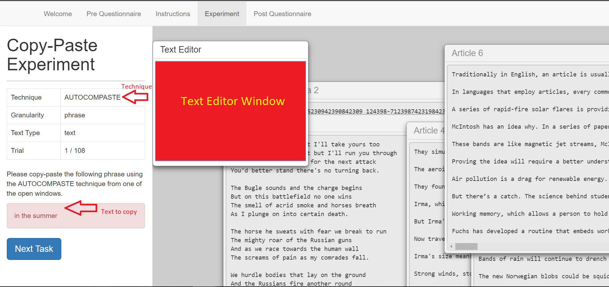

Dear participant , please read the instructions before the experiment. Pressing the “next” button will immediately start the experiment.
In this experiment, you will be given tasks by the web program to copy text from windows containing text and pasting the text into a text editor.
The purpose of this experiment is to test the usability of a newly developed design concept called AutoComPaste, which is a new copy and paste method which analyzes the text in your currently opened windows.
In the next screen, you will see a screen similar to the screenshot below. The interface is split into two sections. In the left section, there will be a string of text that you are required to copy, while in the right section, you will be shown a few windows containing text, one of which is a Text Editor window which you can paste text in.
There will be two techniques used to achieve the tasks given by the web program:
Firstly highlight the text that you want to copy, then press Ctrl + C to copy the text into your clipboard. Next, click on the location where you want to paste the text, then press Ctrl + V to paste the text.
Start typing the text you want to copy and you will see a dropdown list of possibilities. Use the up/down arrow keys to select the correct line that you want to copy and press Enter.
There will be 108 trials in total, 108 tasks for you to complete. The estimated time for the whole experiment is 27 minutes. You will be asked to take a break of 1 minute for every 12 trials done. The screenshot below shows the screen that you will see after completing 12 trials.
For every 12th trial, the button indicating “Break Time!” will show up on the screen, as seen from the screenshot above. Please fill in the text for the trial before pressing the button.
After pressing the button, a timer will be displayed on the screen, as seen in the screenshot above. When the timer hits 0, the next trial will immediately start, so please prepare for the next trial before the timer hits 0.
After filling in the text for the final 108th trial, pressing the button will direct you to the post-experiment questionnaire page. Please proceed to fill in the questionnaire. The experiment will conclude after you press the submit button.